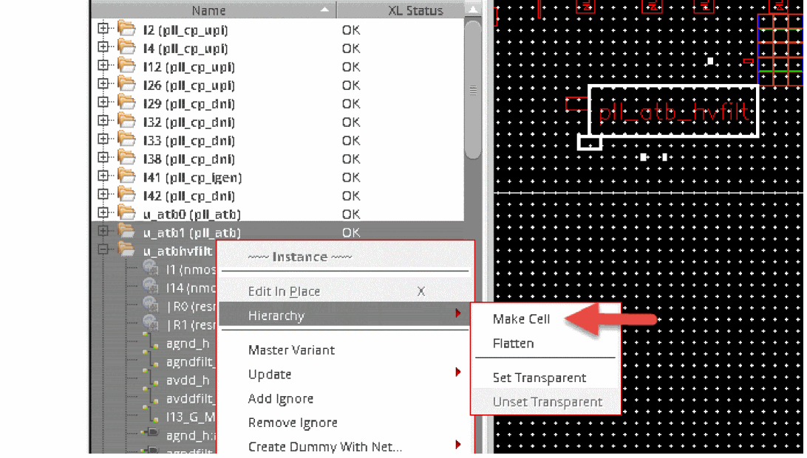
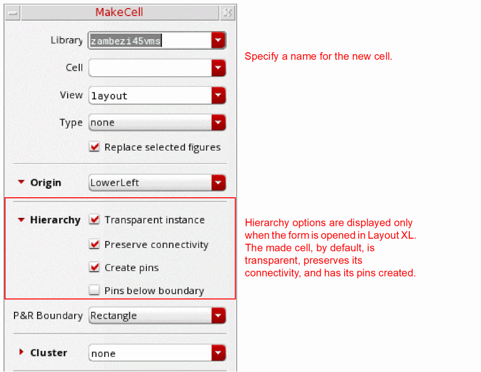
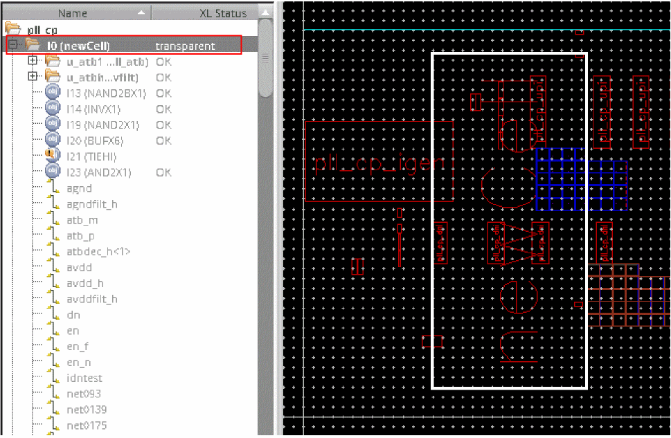
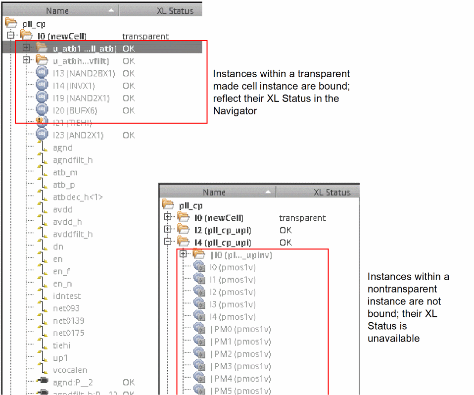
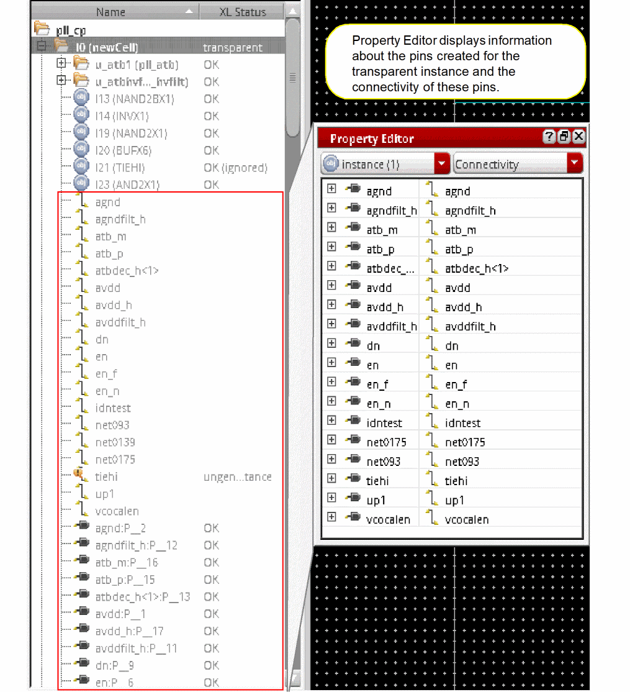

Creating a Made Cell
To create a made cell with or without objects selected:
-
In the layout canvas or the Navigator assistant, right-click and choose the Hierarchy – Make Cell command from the shortcut menu.
Alternatively, you can choose the Edit – Hierarchy – Make Cell command.
 -
The MakeCell form opens. The Hierarchy group box options Transparent instance, Preserve connectivity, and Create pins are selected by default to generate a made cell that is XL compliant.
The form displays the Hierarchy group box only when opened using Layout XL.
 - In the Cell field, type a name for the cell.
-
Optionally,
- Specify the Library and View name, if different from the layout from which the objects have been selected.
- Choose a predefined make cell type.
- Choose the other Make Cell options, as required.
- Choose to create a PR boundary for the made cell. You can also choose the PR boundary shape.
Alternatively, you can use themakeCellPRBoundaryenvironment variable to specify whether a PR boundary needs to be created for the made cell, and if so, what should be the shape of the PR boundary. -
Click OK.
A new cellview carrying an instance of the made cell is created, as shown in the figure below. The made cell instance reflects an XL Status, transparent.
Notice in the figure below that the instances within the transparent made cell instanceI0are bound and reflect their XL Status as OK. On the other hand, instances within a regular, non-transparent instance, such asI4do not reflect any XL Status because the binder treats them as leaf-level instances. Therefore, the binder cannot bind to the instances and nets within such instances.
However, if an existing, hierarchical instance such as, |4, can be made visible to the binder by setting the instance as transparent, the binder can see inside the instance and bind it to its schematic counterpart. In addition to being transparent by default, the made cell also has its pins created, as displayed in the figure below.
Having the pins created allows the made cell to be connected to the current level. Alternatively, you can choose to not have pins created when creating a make cell. For this, you must set themakeCellCreatePinsenvironment variable tofalse.
By default, the make cell you create also has its connectivity preserved. But, you can choose to not preserve connectivity by setting themakeCellPreserveConnenvironment variable tofalse.
To ensure the top cellview remains XL compliant when the Make Cell command is run with the Preserve connectivity option selected, the connectivity and shape of the last pin on the terminal is retained.
Related Topics
Return to top